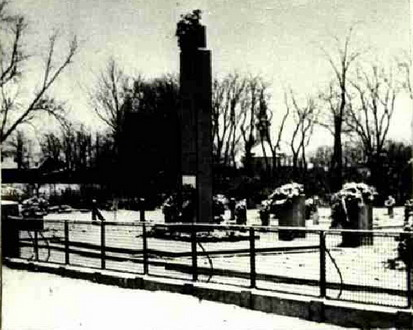
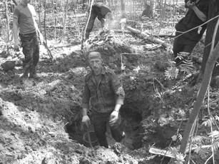
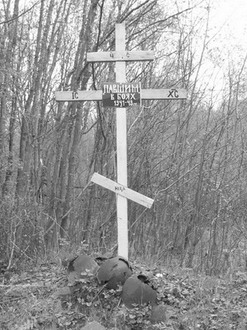
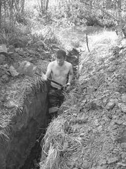

май 2009 года
АДРЕСА НАШЕЙ БОЛИ
безымянное кладбище героев в городе Кымпия-Турзий
В ходе поисковых работ по установлению фронтовых судеб, мест гибели и захоронения погибших и пропавших без вести часто приходится отвечать на вопрос: «Почему неизвестно место захоронения солдата, воевавшего почти всю войну и погибшего за несколько месяцев до её окончания. Ведь приходила из части «похоронка», в ней сообщалась точная дата гибели и место первичного погребения?».
Одна из главных причин этого позорного факта заключается в том, что в ходе многочисленных послевоенных переносов воинских захоронений и их укрупнений имена были утрачены. Так, например, на территории Польши в ходе такого укрупнения было ликвидировано почти 11 тысяч захоронений советских воинов. В итоге из полумиллиона погибших увековеченными на памятниках и обелисках, остались имена только 89 000 бойцов и командиров. На территории бывшей Чехословакии - из 84 600 известны 16 760, в Румынии - из 25 179 только 3 070.
По данным Управления по увековечению памяти о павших защитниках Отечества МО РФ в братской могиле на городском кладбище в Румынском городе Кымпия-Турзий, уезд Клуж, захоронено 259 советских военнослужащих. 17 из них известны «пофамильно», хотя фамилии в большинстве своём искажены и не поддаются идентификации.
Этот список в основном совпадает со списком из Государственного Архива Румынии. Сотрудникам Фонда «Жить и Помнить» удалось установить 172 фамилии солдат, сержантов и офицеров Красной Армии, похороненных в Кымпия-Турзий, достаточно подробно описать их биографические данные, воинские звания и должности, даты гибели и места первичного захоронения. Среди них более 140 сержантов и солдат украинской национальности, в основном, из Полтавской и Винницкой областей. Воевали погибшие и захороненные там воины в составе: 206-й стрелковой Корсуньской Краснознамённой орденов Суворова и Кутузова дивизии, 4-й Гвардейской Овручской Краснознаменной орденов Богдана Хмельницкого и Суворова воздушно-десантной дивизии, 34-й отдельной Уманьской истребительно-противотанковой артиллерийской бригады.
После окончания боёв с немецкими оккупантами за освобождение села Кымпия-Турзий, которые продолжались с 9 сентября по 19 октября 1944 года, жителями был создан Комитет, инициировавший необходимость постройки на территории села специального воинского Кладбища Героев в честь советских солдат-освободителей. В Государственном Архиве Румынии хранится заявка примэрии села в адрес Санитарной службы уезда Турда о выдаче разрешения на эксгумацию останков советских воинов и переноса их на Кладбище Героев.
22 декабря 1945 года был составлен протокол об эксгумации офицеров, сержантов и солдат Красной Армии, первично захороненных на территории села (18 опознанных воинов и 20 неопознанных). Первый список советских воинов, погребённых на Кладбище Героев, был составлен членами Комитета уже 25 декабря 1944 года.
Точной цифры перезахороненных советских воинов на Кладбище Героев в Кымпия-Турзий в румынских архивах нет. Её приводят оригинальные документы, уточняющие безвозвратные потери Красной Армии при освобождении села Кымпия-Турзий, хранящиеся в ЦАМО РФ.
Информация об установленных именах советских воинов, перезахороненных на кладбище в г. Кымпия-Турзий была передана в Управление по увековечению Памяти погибших при защите Отечества МО РФ, администрацию румынского города и посольство Украины в РФ. По инициативе посольства она была выложена на страницах трех украинских информационных агентств.
Румынские местные власти положительно относятся к возможности реконструкции кладбища. С 2009 года в Румынии начало работу представительство МО РФ по уходу за воинскими захоронениями. Надеемся, что сбудется пожелание безвременно ушедшего от нас Вице-президента Фонда Г.В. Харитонова, и на братских могилах кладбища Героев появятся имена воинов-освободителей. Родственники, которые, безусловно, остались, смогут приехать на действующее воинское кладбище и поклониться их праху.
Нет более важного дела для установления дружеских отношений между странами, чем память о минувшей страшной войне. Именно эта память и объединяет во многом наши народы. |

ХРАНИТЬ ПАМЯТЬ О ПОГИБШИХ, ЗАБОТИТЬСЯ О ЖИВЫХ
В Москве прошла 6-ая внеочередная конференция общероссийской общественной организации ветеранов войны и военной службы по вопросу: «О работе организации и подготовке к достойной встрече 65-летия великой Победы».
В постановлении конференции подчеркивается необходимость принять конкретные меры по качественной подготовке к проведению 65-летнего юбилея Победы советского народа над фашистской Германией, настойчиво продолжать борьбу за социальные права и повышение жизненного уровня ветеранов ВОВ, тружеников тыла военных лет, ветеранов военной службы.
Участники конференции намерены продолжать работу по увековечиванию героических подвигов и памяти погибших воинов в великой Отечественной войне и локальных военных конфликтах, проявлять заботу о сохранении и поддержании в надлежащем состоянии воинских захоронений, мемориальных комплексов, памятников, обелисков, установленных в честь героических свершений ветеранов войны и труда, партизан, подпольщиков, узников фашистских лагерей и воинов – интернационалистов.
Председателем Общероссийской организации ветеранов войны и военной службы избран участник ВОВ, дважды герой Советского Союза, генерал-полковник Михаил Петрович Одинцов. |
ВАХТА ПАМЯТИ
24 апреля сбором поисковых отрядов в Зубцовском районе официально открывается очередной полевой поисковый сезон.
…И тишина четыре года пряталась,
От пуль забилось солнце на закат,
Но не было б весны у 45-го,
Без тех, из 41-го солдат!
Из стихотворения командира поискового отряда «Память»
Сидоровой Н.Ю
С каждым приходящим годом все меньше остается в живых прямых участников и свидетелей боевых действий на Тверской земле. При этом до сих пор - уже более 60 лет - лежат незахороненными без вести пропавшие защитники Отечества, погибшие за свое Отечество и так бесславно им забытые. По данным из различных документальных источников более двух миллионов воинов еще числится без вести пропавшими на российской земле.
Благодаря неимоверным усилиям общественных поисковых объединений, бескорыстной работе энтузиастов-поисковиков, эта цифра с каждым годом, хоть ненамного, но сокращается.
Заступая на очередную вахту, поисковики надеются на понимание населением важности проводимых ими мероприятий по увековечению памяти о погибших защитниках Родины, на конструктивное сотрудничество и помощь со стороны органов власти и общественности.
В настоящее время поисковое движение в Тверской области имеет свою организационную структуру в виде Тверской областной общественной организации «Научно-исторический военно-патриотический центр «Подвиг», организующую и проводящую поисковую работу на Тверской земле с 1987 года.
Поисковая работа обеспечена законодательно, 25.02.1999 года принят Закон «О проведении на территории Тверской области работ по поиску и захоронению павших в годы великой Отечественной войны защитников Отечества».

Но необходима единая государственная программа увековечения памяти погибших с обязательным финансированием поисковых работ из федерального бюджета. Надо создать при МО РФ действующий орган, наделенный соответствующими полномочиями и обеспечивающий своевременное нормативное и финансовое обеспечение поисковых работ и контроль за их выполнением.
Ждать, пока армия проведет захоронение всех павших, значит оставить все как было. И это вовсе не потому, что МО этого не хочет делать. Просто не может. Для поиска останков погибших нужен профессионализм, произрастающий из осознанного желания выполнить эту задачу как свой долг. Нужна ясность цели. У солдат-срочников нет ни того, ни другого, ибо солдат работает в рамках приказа, не всегда становящегося личным мотивом, импульсом к действию. Попросту говоря, нельзя это святое дело выполнять как любую работу, по приказу начальства, а не по своей совести.
Поэтому остается ждать лучшего и надеяться, как всегда, только на себя и на возможности Тверского региона.
Председатель правления НИВПЦ «Подвиг» С.В. Титков
|
|
|